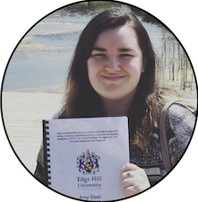

|  | Amy SteelStudent Teacher and Film & Television Production Graduate My name is Amy Steel and I am a PGCE Secondary Computer Science Student with a Bachelor's Degree in Film & Televison Production. I am currently working as a Cover Supervisor/teachign Assistant for primary and secondary schools as well as teaching English online. I enjoy video editing and creative writing and I also like to play video games. |
As I am a firm believer in life-long learning and I have a range of interests in education, I have listed my Qualifications and Certifications through the link below.
I enjoy trying new things and experience new adventures but my main hobbies are:
| Dates | Work |
|---|---|
| February 2020 - Present | Teaching Assistant and Cover Supervisor with Step by Step Education |
| January - Present | Teaching Assitant with Vida Education |
| October 2017 - February 2018 | Call Center Agent for Vitality Health Insurance (Via The Contact Company) |
| September 2017 | Movement to Work Staff with HMRC |
| April 2013 - December 2015 | Food Service Assistant with Sodexo |
| Screenwriting | ★★★★☆ | Organisation | ★★★★★ |
| HTML | ★★★★☆ | CSS | ★☆☆☆☆ |
| Jave Script | ★☆☆☆☆ | Microsoft Office | ★★★★★ |
| Python | ★★★☆☆ | Spreadsheets & Databases | ★★★★☆ |
| Video Editing | ★★★★★ | Adobe Packages | ★★★★☆ |
| Social Media Marketing | ★★★☆☆ | Event Planning | ★★★★☆ |
| Phone Skills | ★★★★★ | Diary Management | ★★★★☆ |
When I was selected by the previous society preseident to takeover the society, there were only two non-comittee members. This meant that I had to use my communication & leadership skills to work with my team and put changes in place to ensure the survival of the society. These changes allowed the society to see and influx in interested parties and provide a stable full-time attendance from twenty regular members and a high of between fifty to sixty members for our online platforms and events that I organised. I ensured that the society had new procedures in place for a smooth handover to the new comittee after my graduation and to help the society prosper in future years through the hard work and dedication of my hand-picked comittee.
Prior to my move to university, I spent six years as a youth leader for Spring Mount Christian Fellowship. I would serve o the tuck-shop, handle money, cook with the children, play and organise game tournaments for various ages (a skill later adopted into my time as society president at Edge Hill University), supervised the children and ensuring we had a record of all the children in attendance. This was for two age groups; Wednesday 4pm-7pm for Primary and Friday 6pm-9pm for Secondary.